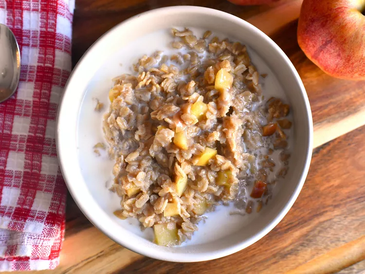

My favorite oatmeal

Descripton of the meal:
This apple cinnamon oatmeal has a wonderful flavor thanks to fresh
apple pieces, apple juice, and cinnamon.
A simple breakfast even the kids will enjoy!
Ingredients:
- 1 cup water
- ¼ cup apple juice
- 16 apples, cored and chopped
- ⅔ cup rolled oats
- 1 teaspoon ground cinnamon
- 1 cup milk
Steps:
- Combine water, apple juice, and apples in a saucepan.
Bring to a boil over high heat; stir in rolled oats and cinnamon.
Return to a boil, then reduce heat to low, and simmer until thick, about 3 minutes.
- Spoon into serving bowls, and add milk.